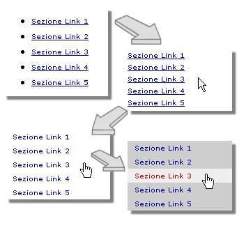
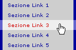
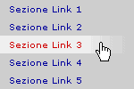

Menu verticali con i CSS
[versione riveduta e corretta: sono stati corretti alcuni problemi con Opera e IE5 ed è stato dato un diverso taglio all'articolo]
In questo articolo saranno illustrati tre esempi di come sia possibile trasformare una semplice lista di link in un menu verticale. Attraverso l'uso delle pseudo-classi a:hover e a:active è possibile ottenere effetti roll-over senza l'uso di javascript.
Il menu come lista
Per rendere i menu verticali compatibili con tutti i browser il codice (X)HTML è stato reso più semplice e chiaro possibile usando le liste. Il codice (X)HTML di un menu sarà, ad esempio, il seguente:
<ul class="menu1">
<li><a href="#">Sezione Link 1</a></li>
<li><a href="#">Sezione Link 2</a></li>
<li><a href="#">Sezione Link 3</a></li>
<li><a href="#">Sezione Link 4</a></li>
<li><a href="#">Sezione Link 5</a></li>
</ul>
Senza le regole CSS il risultato (semplice ma compatibile con qualsiasi browser e/o dispositivo per la navigazione in internet, compresi screen reader e browser testuali come Lynx) sarebbe il seguente:
A partire da suddetta lista costruiremo tre menu (vedi pagina di esempio) di cui il primo, molto semplice, sarà un modello di base per la creazione di menu più elaborati. I tre differenti a tre differenti menu saranno associati alle classi: "menu1", "menu2", "menu3".
Il modello di base
Il primo menu è molto semplice e serve come base di sviluppo per menu più elaborati.
Attraverso le regole CSS trasformeremo una semplice lista di link in un semplice menu verticale. Per fare ciò elimineremo i marcatori di lista e la sottolineatura, aggiungeremo un effetto roll-over realizzato con i soli CSS senza l'uso del JavaScript e renderemo il link attivo non solo sul testo ma su tutta l'area orizzontale associata al link. Quanto detto è illustrato nella seguente immagine.

Per realizzare tale trasformazione abbiamo adottato le seguenti regole CSS.
ul.menu1 {
width:150px;
list-style:none; /* elimino i punti elenco */
margin:0; padding:0; /* elimino i rientri delle liste */
}
Innanzitutto impostiamo la larghezza del menu, eliminiamo i marcatori della lista ed annulliamo l'indentazione tipica delle liste. A questo punto il menu appare con una semplice list di link, senza marcatori né indentazione.
ul.menu1 li a {
display:block; /* il link occupa tutto lo spazio orizzontale */
text-decoration:none; /* elimino la sottolineatura, che si tratta di un link si capisce dalla struttura */
padding:0 1em; /* lascia spazio far il bordo del menu e il testo del link */
height:2em;line-height:2em; /* altezza del link: height e line-height devono avere il medesimo valore */
}
ul.menu1 li { display:inline } /*elimina lo spazio fra gli elementi della lista introdotto da Opera*/
Attraverso la dichiarazione display:block, il link occuperà tutta l'area orizzontale quindi non sarà cliccabile solo il testo del link ma tutta l'area della riga occupata dal link. Si elimina poi la sottolineatura del link poiché sarà la struttura stessa del menu ad indicare la presenza di collegamenti. Attraveso il padding si discostano i link dal bordo del menu. Utilizzando le proprietà height e line-height è possibile determinare l'altezza dell'area occupata da ogni singolo link. Ciò si dimostra molto utile anche per un piacevole "effetto collaterale" che annulla un fastidioso bug di Internet Explorer. Su quest'ultimo browser, infatti, il link non occupa tutta l'area (nonostante la dichiarazione display:block) se è contenuto in un elemento di cui si è fissata la larghezza (come appunto l'elemento ul.menu1). Lo svantaggio di specificare l'altezza (necessario per sopperire ad un bug di Internet Explorer) consiste nel fatto che se il testo del link non entra tutto in una sola riga si possono avere spiacevoli sovrapposizioni fra link adiacenti.
ul.menu1 li a:link, ul.menu1 li a:visited {
background:#ccc;
color: #009;
} /* colori per il link */
ul.menu1 li a:hover, ul.menu1 li a:active {
background: #eee;
color:#c00;
} /* colori per l'effetto roll-over */
Infine si crea l'effetto roll-over, sfruttando la pseudo-classe a:hover semplicemente giocando con i colori dello sfondo e del testo dei link.
Il risultato finale è illustrato dal primo dei menu della pagina di esempio.
Giocare con i bordi
Il secondo menu, associato alla classe menu2, presenta dei bordi alla destra ed alla sinistra dei link, il colore dei bordi cambia al passaggio del mouse.

Il codice CSS adottato si differenzia da quello per il menu di base per l'aggiunta delle seguenti dichiarazioni:
ul.menu2 li a {
border-width:5px;border-style:none solid; /* aggiungo dei bordi laterali */
}
ul.menu2 li a:link, ul.menu2 li a:visited {
border-color:#009
}
ul.menu2 li a:hover, ul.menu2 li a:active {
border-color:#66c;
}
Si specifica la dimensione e il tipo di bordo (none per il bordo superiore e quello inferiore, solid per i bordi destro e sinistro). Il colore dei bordi si specifica assieme ai colori per il testo e lo sfondo. Quando il mouse si trova sopra il link, ovvero quando il link è attivato il bordo diventa di colore più chiaro.
Giocare con gli sfondi
Il terzo menu, associato alla classe menu3, si presenta del tutto simile al primo menu, ma l'effetto roll-over si differenzia per il fatto che lo sfondo del link selezionato è sfumato, come illustrato nella seguente immagine.

Il codice CSS adottato si differenzia da quello per il menu di base per l'aggiunta delle seguenti dichiarazioni:
ul.menu3 li {
background:url(sfumato.png); /*pre-load immagine*/
}
ul.menu3 li a:hover, ul.menu3 li a:active {
background:#eee url(sfumato.png) 100% 0 repeat-y;
} /* colori per l'effetto roll-over */
La sfumatura dell'effetto roll-over è ottenuta con un'immagine di sfondo che compare, opportunamente posizionata, al passaggio del mouse. Ponendo tale immagine come sfondo dell'elemento della lista si fa in modo che questa sia pre-caricata senza che possa però essere vista, essendo coperta dallo sfondo dei link. Al passaggio del mouse, l'immagine è posta come del link. L'immagine è posizionata a sinistra in alto (100% 0) e ripetuta solo verticalmente (repeat-y). Il colore dello sfondo al passaggio del mouse è tale da completare l'effeto di sfumatura (nell'esempio, infatti l'immagine di sfondo occupa solo il 30% dello spazio orizzontale).
Considerazioni
In questo articolo è stato presentato un modello di base, di facile implementazione, per la realizzazione di menu verticali con effetti roll-over. Oltre al modello di base sono stati illustrati due possibili esempi di come sia possibile modificare tale modello.
Gli effetti roll-over sono stati ottenuti, con evidenti vantaggi, senza utilizzare il Javascript. L'usabilità e l'accessibilità dei menu è integra, si noti infatti come la stessa pagina priva dei CSS sia perfettamente utilizzabile con ogni tipo di browser.
File correlati
Articoli correlati:
Strumenti


.ConStile è disponibile anche in XML.
Some Rights Reserved. This work is licensed under a Creative Commons License.